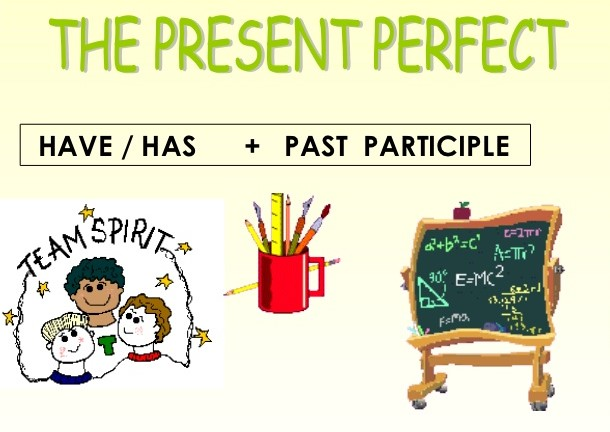

<!-- We don't need full layout here, because this page will be parsed with Ajax-->
<!-- Top Navbar-->

<div class="pages">
  <!-- Page, data-page contains page name-->
  <div data-page="about" class="page">
    <!-- Scrollable page content-->
    <div class="page-content">
      <div class="navbar">
  <div class="navbar-inner">
    <div class="left"><a href="#" class="back link"> <i class="icon icon-back"></i><span>Back</span></a></div>
    <div class="center sliding">Present Perfect</div>
    <div class="right">
      <!-- Right link contains only icon - additional "icon-only" class--><a href="#" class="link icon-only open-panel"> <i class="icon icon-bars"></i></a>
    </div>
  </div>
</div>
      <div class="content-block presentcon">
    
    <div class="row no-gutter">
        <div class="col-100">



        </div>
    </div>
(Please note that British and American English have different rules for the use of this tense. The explanation and exercises here refer to British English. In American English, it is often acceptable to use the past simple in some of these examples.)

We use the present perfect when we want to look back from the present to the past.

We can use it to look back on the recent past.
<h2>Examples</h2>

<ul>
<li>I've broken my watch so I don't know what time it is.</li>
<li>They have cancelled the meeting.</li>
<li>She's taken my copy. I don't have one.</li>
<li>The sales team has doubled its turnover.</li>

</ul>

      </div>
    </div>
  </div>
</div>